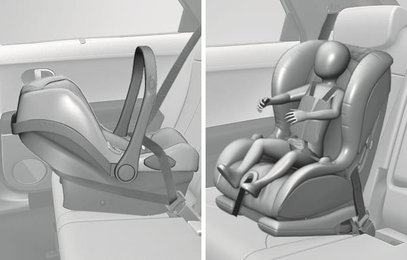
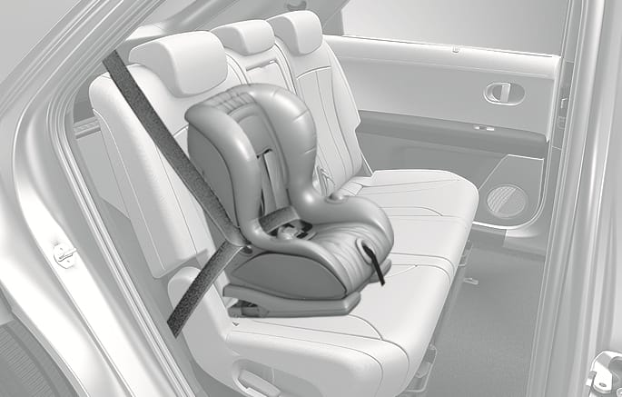
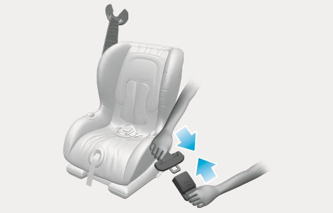
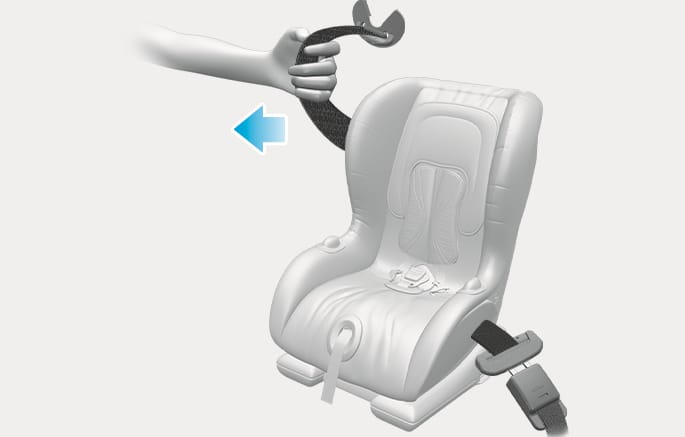
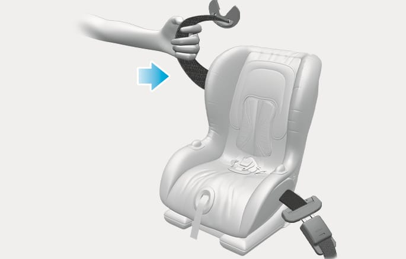
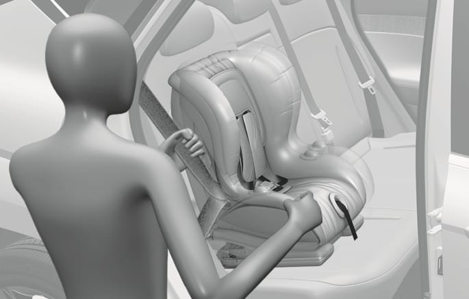
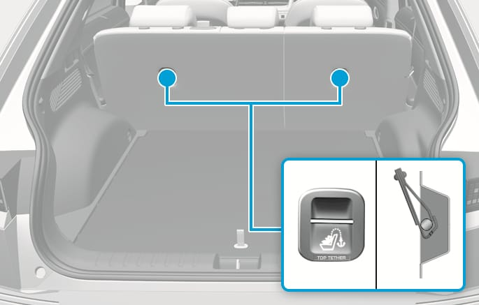
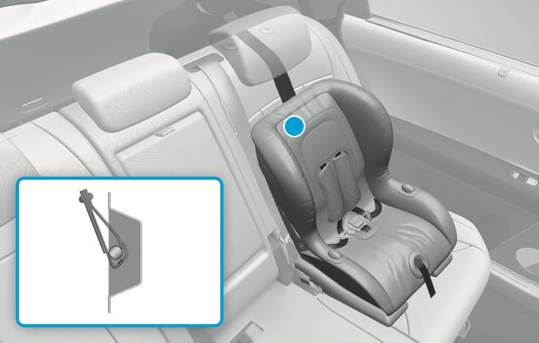
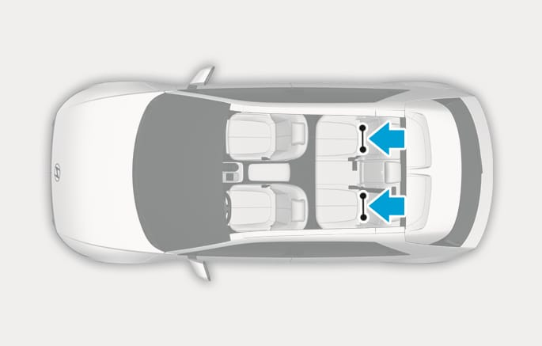
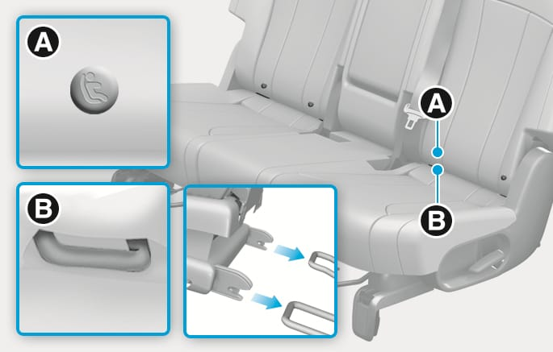

어린이 보조좌석 설치 시 주의사항
-
국가의 안전 규제를 준수한다는 문구가 표시된 인증 제품만 사용하고, 설치 시 제품의 제조사에서 제공하는 사용설명서를 참고하십시오.
-
어린이의 체격과 좌석의 크기에 맞는 보조좌석을 사용하십시오.
-
어린이는 항상 뒷좌석에 적절한 보호 장치를 장착하여 앉히십시오.
-
헤드레스트가 없는 상태로 어린이 보조좌석을 고정하지 마십시오. 급제동 또는 충돌 사고 발생 시 어린이가 부상을 당할 수 있습니다.
-
운전석 쪽 뒷좌석 공간이 좁은 경우 동승석 쪽 뒷좌석에 어린이 보조좌석을 설치하십시오.

2C_ALRSeatBelt
안전벨트 기능을 ALR모드로 전환해 어린이 보조좌석을 단단히 고정할 수 있습니다.
-
모든 좌석에는 일상 주행 시 제한적인 움직임을 허용하는 ELR 방식의 3점식 안전벨트가 장착되어 있습니다.
-
뒷좌석 안전벨트를 끝까지 뽑았다 천천히 감으면 ALR 모드가 작동해 어린이 보조좌석이 움직이지 않도록 단단히 고정할 수 있습니다.
-
안전벨트 플레이트를 잡고 어깨띠를 천천히 당긴 후 어린이 보조좌석의 고정부를 통과하도록 하십시오.
-
안전벨트가 꼬이지 않도록 주의하십시오.

2C_ALRSeatBeltInstall
-
-
안전벨트 플레이트를 버클에 넣고 '찰칵' 소리가 날 때까지 미십시오.

2C_ALRSeatBeltInstall_2
-
안전벨트 어깨띠를 끝까지 당겨 뽑으십시오.
-
안전벨트 기능이 ALR 방식으로 전환됩니다.

2C_ALRSeatBeltInstall_3
-
-
어깨띠를 당겨 어린이 보조좌석이 단단히 고정된 상태를 유지하면서 어깨띠를 천천히 감아 넣으십시오.
-
어깨띠가 감길 때 작동음이 들리면 ALR 모드로 전환된 것입니다.
-
작동음이 들리지 않는다면 3번 절차부터 다시 수행하십시오.

-
-
어린이 보조좌석을 흔들며 정확한 위치에 단단히 고정되었는지 확인하십시오.
-
어린이 보조좌석이 단단히 고정되지 않았다면 3번 절차부터 다시 수행하십시오.

2C_ALRSeatBeltInstall_5
-
안전벨트를 풀고 어린이 보조좌석을 분리한 후 안전벨트를 완전히 감아 넣으면 ALR 모드가 자동으로 해제되고 ELR 모드(기본 적용 모드)로 전환됩니다.

2C_ALRSeatBeltTetherAnchor
뒷좌석 등받이 뒤편에 설치된 테더 앵커(후크 고정 고리)를 사용해 어린이 보조좌석을 고정하십시오.
성인용 안전벨트나 다른 장치를 테더 앵커에 연결해 사용하지 마십시오. 테더 앵커는 정상적으로 고정된 어린이 보조좌석의 하중만 견디도록 설계되었습니다.
-
어린이 보조좌석의 고정 벨트를 뒷좌석 등받이 뒤로 넘긴 후 고정 벨트의 고리를 테더 앵커에 고정하십시오.

2C_ALRSeatBeltTetherAnchorInstall
-
고정 벨트의 길이를 조절해 어린이 보조좌석을 단단히 고정하십시오.
로어 앵커로 보조좌석을 고정할 때, 안전벨트가 시트와 보조좌석 사이에 끼거나 엉키지 않도록 잘 정돈하고, 주변에 물체를 두지 마십시오.

2C_ALRSeatBeltLowerAnchorOverview

2C_ALRSeatBeltLowerAnchor
- 로어 앵커 심볼
- 로어 앵커
로어 앵커 결합용 고정장치가 있는 어린이 보조좌석의 경우, 안전벨트 대신 해당 고정장치를 이용해 간편하게 보조좌석을 고정할 수 있습니다.
-
뒷좌석 등받이에는 로어 앵커의 위치를 나타내는 심볼이 표시되어 있습니다.
-
로어 앵커는 뒷좌석 하단에 설치되어 있으며, 등받이와 쿠션 사이에 손을 넣어 확인할 수 있습니다.
-
뒷좌석 중앙 시트에는 로어 앵커가 설치되어 있지 않습니다.